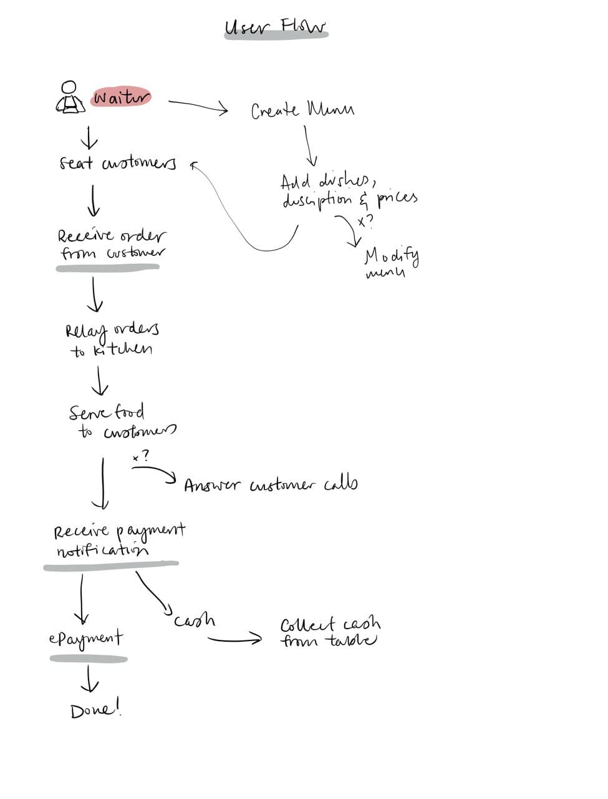
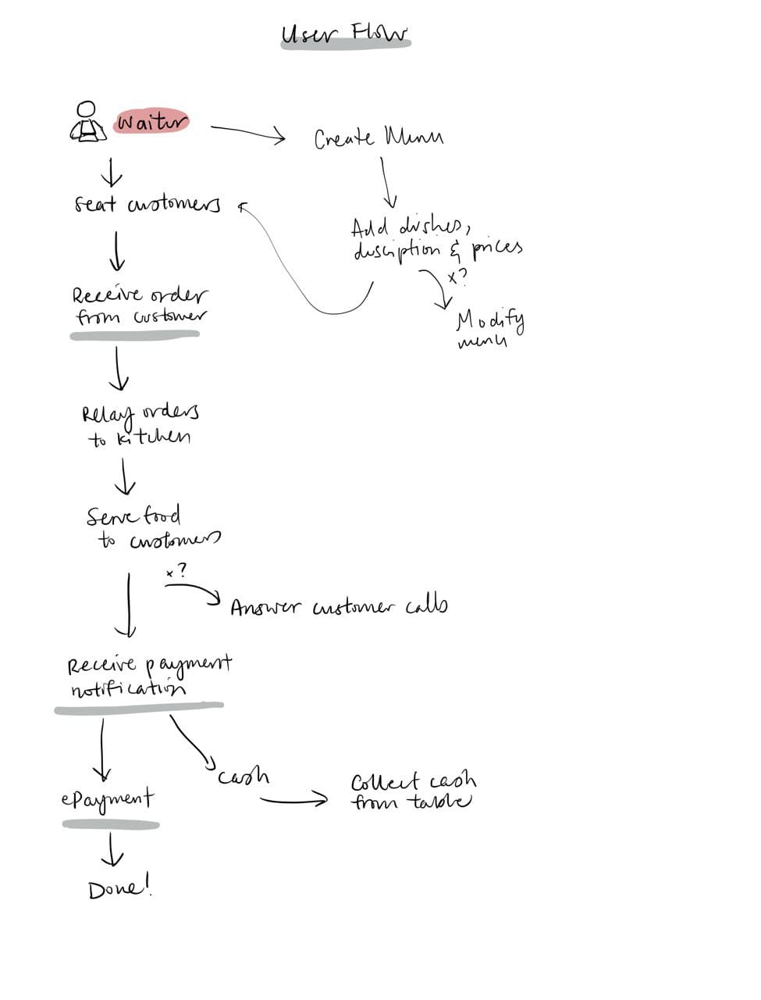
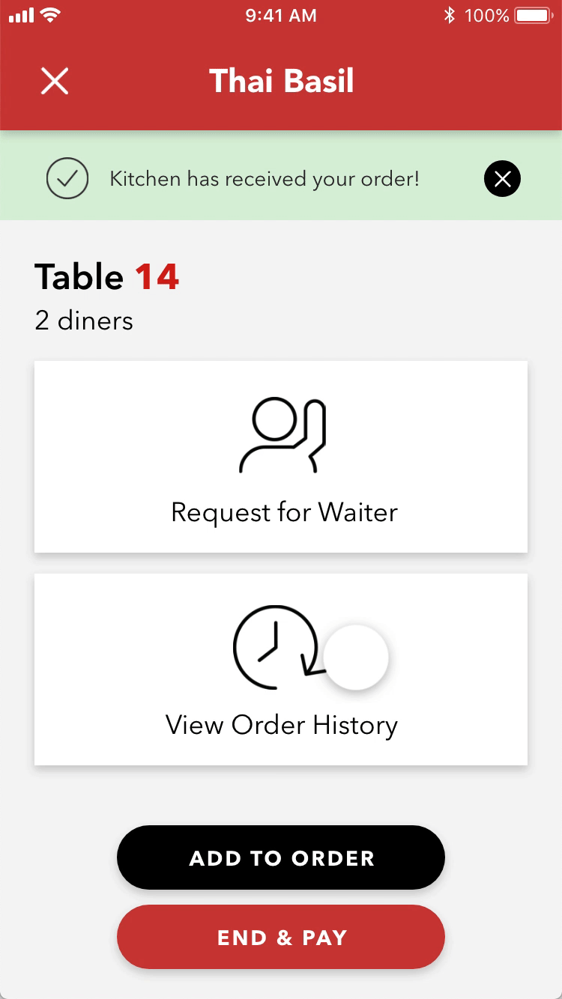
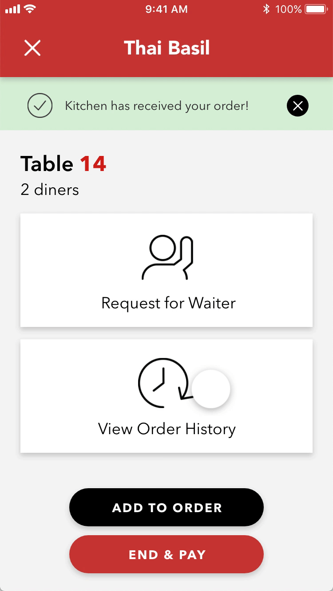

Overview
In the Spring 2019 semester at UC Berkeley, I took the class IND ENG 186 Product Management. Through the 13 weeks, we were guided by industry mentors to identify a market need, conduct competitive and user research, and practise rapid prototyping using agile and scrum methodologies. I worked in a cross-functional team of five comprising of business, engineering and design students.
Our Hypothesis
Our team formed around the idea of optimising the queuing and ordering experience at restaurants. Inspired by how the likes of Snackpass and Good Life had allowed consumers to order fast food without the need to queue or pay in person, we wanted to give dine-in restaurants a similar treatment. We believed that it would cut down wait times, improve the payment experience of customers, as well as deliver significant cost savings to restaurant owners due to the higher turnover and reduced required manpower.
Understanding the Customer
We had a vague idea of what we wanted to achieve, but we couldn't design a solution if we didn't first understand our customer. Thus, the team went through a session of user personas generation. We came up with two personas corresponding to the two types of users that we building our solution for:
The Value Proposition
Now that we understood our users better, we were able to fine-tune our solution - an extension to the popular review app Yelp which we called Yelp Dine-In that would integrate queueing, ordering and payment all in one place.
Restaurant owners and diners had three major pain points about the dining process:
- It takes too long. On average, diners spend 1.5 hours in a restaurant, but only half of which is dedicated to eating while the other 45 minutes are spent queuing, ordering, waiting and paying.
- Labour is expensive. The average American household spends $2,787 each month on restaurants, which translates to about $420 a month in tips alone. For restaurants, labour costs account for 30-40% of their total expenses.
- It's not personalised. Having many choices is not always a good thing. Sometimes, you just want someone who knows what you like to give you recommendations.
Yelp Dine-In would allow diners to save 15-30 minutes on their dining time, as well as do away with the 15% markup in tips. For restaurant owners, we could cut 20% in operating costs by hiring fewer workers, increase diner turnover and gather feedback about the food from diners.
Scoping the MVP
Now that we had made such big dreams for our solution, it was time to figure out where to start. We started off with scoping out particular groups of users to set our beachhead. For restaurants, we decided on low- to mid-range restaurants in the Bay Area for whom the savings in labour costs would be extremely significant. As for the diners, we targeted college students who are both tech-savvy and price-conscious.
We also had to narrow down our business goal. At such a preliminary stage, we decided to focus on increasing the adoption rate among restaurants in big cities and near colleges, which typically have long wait lines. To gauge the success of our business goal, we came up with two key metrics: the number of restaurants registering for and the number of diner transactions through Yelp Dine-In.
We crafted the user stories that we wanted our MVP to address:
- As a college student, I want to queue, order and pay using my phone so that I can save time.
- As a restaurant owner, I want an affordable and simple method of handling ordering and payment, to streamline labour costs.
We were able to come up with a prioritised list of features that we wanted our solution to have - and categorised them into minimum, MVP and mature.
Prototyping
Next up - the fun part! As one of two designers on the team, I came up with several rounds of prototypes - from lo-fi sketches to a workable prototype done using Adobe XD. At each stage, feedback and critique was taken and incorporated into the next iteration.
First was coming up with the overall user flows.
 

Next, some quick sketches of what the screens would look like.
The sketches were then translated into clickable mockups using Adobe XD. Two app mockups were created, a diner app and a restaurant app.
 

You may view the full clickable prototype here.
User Interviews & Testing
Happening in parallel with the design process, our team conducted user interviews with prospective clients - restaurants around UC Berkeley - to gather their thoughts on our proposed solution and prove or deprove our hypothesis. We were also able to do some user testing by letting them test-drive our app prototypes.
Our interviews with diners proved our hypothesis right that diners spend too long waiting in restaurants and too much on tips. However, many said that wait time was not as big of an issue as their main goal is to socialise, rather than grab a quick bite. They responded favourably to the diner app prototype, and suggested new features like food customisation requests and bill splitting functionality.
The restaurant interviews also reaffirmed our hypothesis that labour cost is the largest concern in an establishment's balance sheets. The owners also appreciated the increased turnover that the app would bring. They found the app prototype intuitive and easy to use, and liked that it integrated every stage in the customer journey. However, they had security concerns over service staff using the app on their personal devices.
Overall, we found the interview findings to be promising. We added certain features, such as food customisation for diners, and a user management system for restaurant staff, to our MVP prototype, based on the feedback.